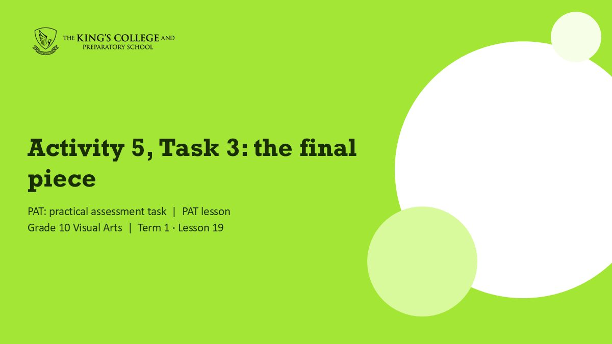

Term 1 · Lesson 19 · PAT lesson
Activity 5, Task 3: the final piece
Start here
Today I will
- Plan my final composition from my best thumbnail and experiments
- Transfer my drawing accurately to the final surface
- Work from big shapes to detail
Think first
Why do builders put up the walls before they hang the pictures?
Words to know
- Final work
- The finished artwork that resolves your idea and is handed in for marks.
- Transfer
- Moving a drawing from your VJ or a sketch onto the final surface, using a grid or tracing.
- Layering
- Building an artwork in stages, from broad first layers to fine final details.
- Blocking in
- Laying down the main shapes and tones first, before any detail.
- Resolved
- Finished and well thought through, with every part working towards the idea.
Slides

Notes
Moving from experiment to final work: planning the composition, transferring it and working from big shapes to detail.
From experiment to final piece
- Plan: Redraw your chosen thumbnail at a larger size and fix the composition.
- Transfer: Use a grid or tracing paper to move the drawing to the final surface lightly.
- Block in: Lay down the big shapes and the main darks and lights.
- Layer: Build up mid-tones, colour and texture in stages.
- Detail last: Add fine detail and the sharpest contrast at the focal point.
Keep the VJ going
- Photograph stages: Take a photo at the end of each session to show the work developing.
- Note changes: If you change the plan, write why in the VJ.
- Link back: Show which experiment led to which choice in the final piece.
Remember
Big shapes first, details last.
Practical
You need: Visual journal, PAT folder
Activity 5, Task 3: the final piece
- Redraw your chosen thumbnail larger in your VJ and settle the composition.
- Rule a light grid on both the plan and the final surface, or prepare a tracing.
- Transfer the main outlines lightly to the final surface.
- Block in the big shapes and the main darks and lights.
- Photograph your progress and stick or note it in the VJ.
- Annotate one decision you made today and why.
Test yourself
- Name one way to transfer a drawing to the final surface.
- Why should you block in big shapes before detail?
- Why photograph your work at the end of each session?
Show answers
1. A grid or tracing paper. 2. So the composition and tones are right before time is spent on detail. 3. To document the process for the VJ and the rationale.